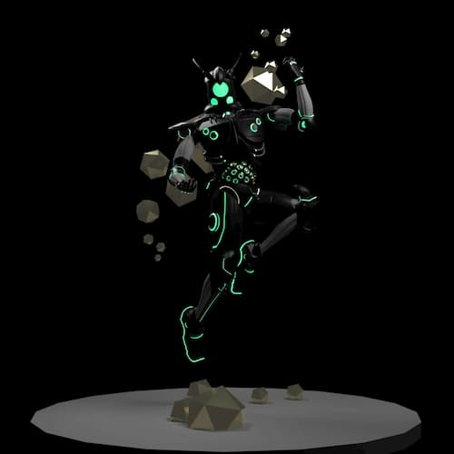
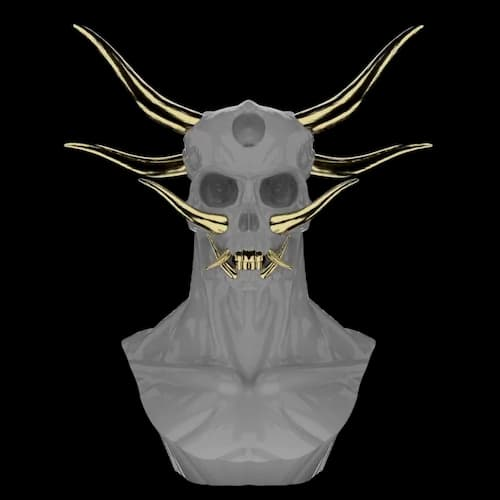
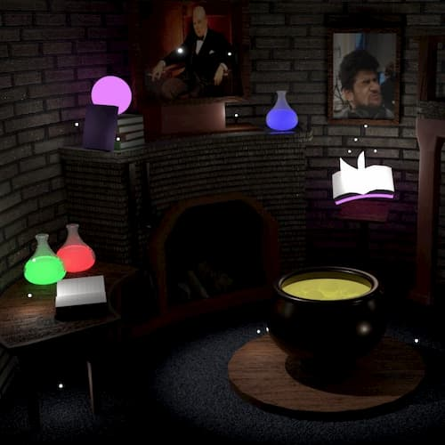
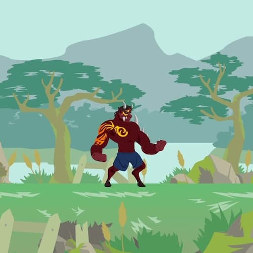
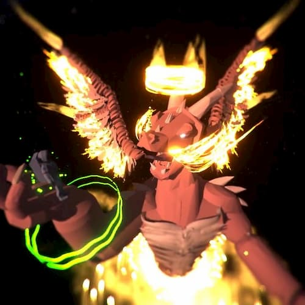
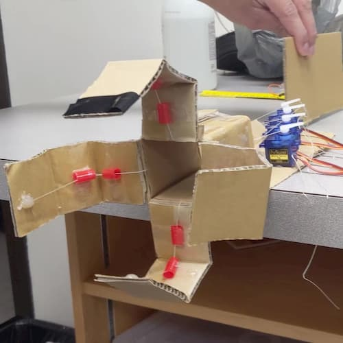
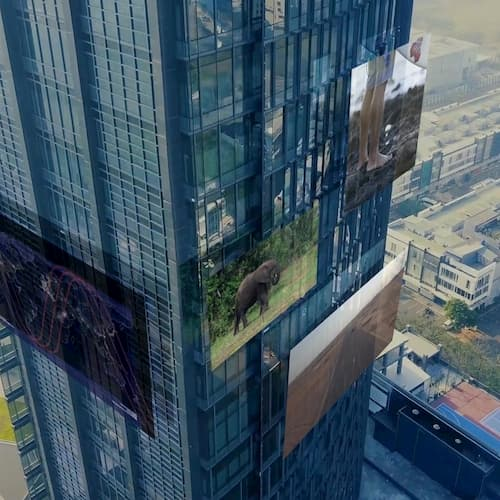
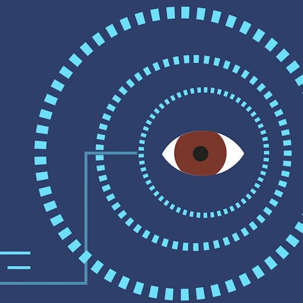
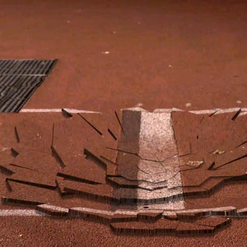

PORTFOLIO
Demo Reel









×


3D Simple Scene
Autodesk Maya
The first environmental setting I've modelled and composited as a college assignment. I went for a "sorcerer's tower" theme as it was a good opportunity to populate the scene with alchemical tools and potions, enchanted books, and strange paintings. I have been thinking about revisiting this assignment and recreating it from the ground up to improve on it.